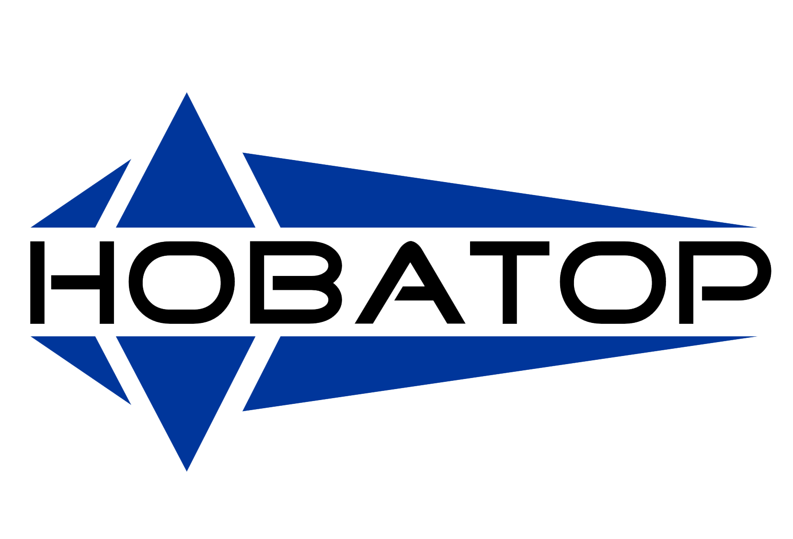

Мы рады приветствовать Вас на нашем сайте «Новатор» — это производственная компания, специализирующаяся на изготовлении оборудования для упаковки продукции и производства упаковочных пакетов – кульков, из плёнки и термопластичных материалов. Главная цель работы коллектива в удовлетворении Ваших запросов как в быту (возможность запайки в плёнку корреспонденции, овощей, круп, мусора, сыпучих, гранулированных, порошкообразных, пастообразных и жидких продуктов) так и при производстве различных товаров для продажи, ведь упакованный товар существенно повысит продажную стоимость и добавит авторитета Вашему производству. Мы готовы способствовать продвижению Вашего Бизнеса. Квалифицированный коллектив способен решать вопросы в области изготовления нестандартного упаковочного оборудования. С помощью пайки-сварки, различными методами добиться нужного результата в работе с термопластичными материалами, пластиком, оргстеклом и т.д. по конкретным требованиям заказчика. Любой вопрос, любая задача, касающаяся упаковки в плёнку, нами решаема. Существует мало вещей, которые мы не смогли бы упаковать в плёнку. На рынке существуют десятки различных видов плёнок – это и полиэтилен, полипропилен, ПВХ, термоусадочная, металлизированная, вакуумная плёнки и т.д. Мы знаем, как обращаться с любой плёнкой в зависимости от поставленной задачи. Компания имеет опыт упаковки в сетку овощей, фруктов т. п., в стикера кофе, чай, т. п, различного рода пакетики чай, травы, т. п, в тубы пастообразные вещества, в ампулы лекарственные препараты, жидкости. Выпускаемое оборудование позволяет упаковывать в плёнку объёмные товары – крупногабаритные двери, окна, матрацы, плиты ДСП, листы пенопласта, стиродура, поролона, т. п. Наши специалисты выпускают установки для дозирования и упаковки в плёнку сыпучих веществ – крупы, сахар, различные гранулы, пилеты, древесный уголь, опилки, сено, т. п. Есть наработки и возможность из тонкого пластика делать формы. А также разливать, дозировать и упаковывать густые жидкости сметану, майонезы, т. п. Пользуются спросом изготовляемые нами транспортёры вертикальные, горизонтальные и подъёмные, конвейерные линии, пневматические прессы, разного рода раскроечные столы, выдвижные и складывающиеся лестницы, помосты, подставки. Производство уверенно освоило выпуск автоматов и полуавтоматов, которые как с оператором, так и без него дозируют – взвешивают, расфасовывают в пакеты и запаивают – упаковывают, различные материалы. Амплитуда потребителей нашего оборудования колеблется от простой домохозяйки, кладовщика, продавца, почтальона до солидных бизнесменов, чья выпускаемая продукция требует упаковки. Компания также занимается ремонтом упаковочного оборудования, заменой расходных материалов и т. д. Само название нашей компании говорит о том, что в своей работе мы отдаём предпочтение применению новейших разработок науки и техники. Приоритетом выпускаемого упаковочного оборудования является качество, дизайн, простота надёжность. Для получения предварительного впечатления о нашем упаковочном оборудовании предлагаем Вам просмотреть наш сайт в разделе «ОБОРУДОВАНИЕ»
«Новатор» — отечественный бренд упаковочного оборудования. Самая популярная продукция компании — настольные и напольные запайщики полимерных пленок, которые давно используются на украинском рынке и поставляются во многие страны зарубежья.
Нашей компанией также разрабатывается и выпускается нестандартное упаковочное оборудование, весодозирующие оборудование, элементы производственных линий.
Вся продукция отличается надежностью и высоким потребительским качеством.